Average Rural Population covered in India across years(2005-14)
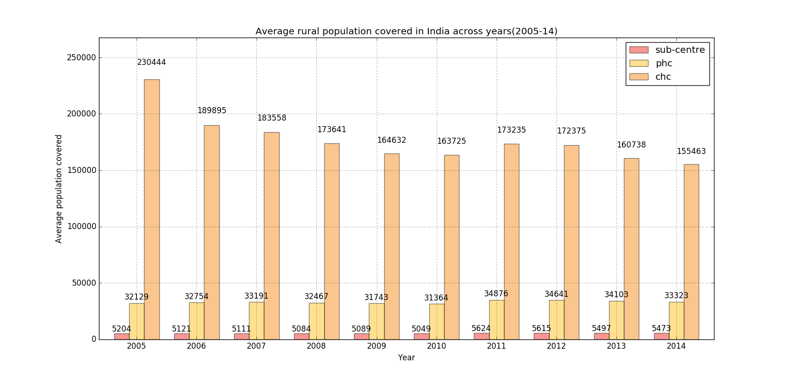
India Subcenter Status 2004-2014
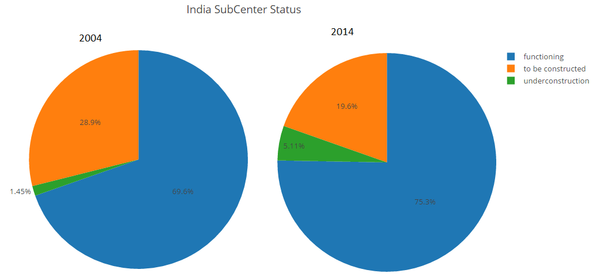
India PHC Status 2004-2014
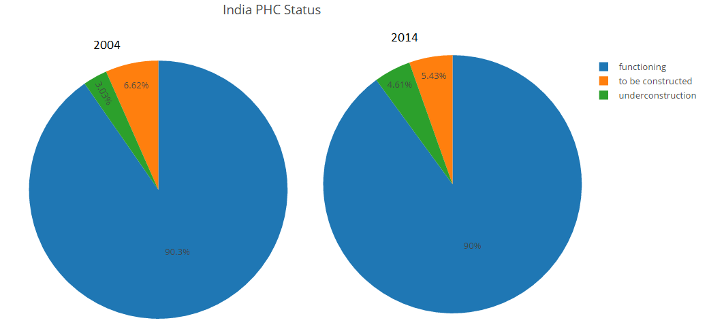
India CHC Status 2004-2014
Death Rate in India across years(2005-13)
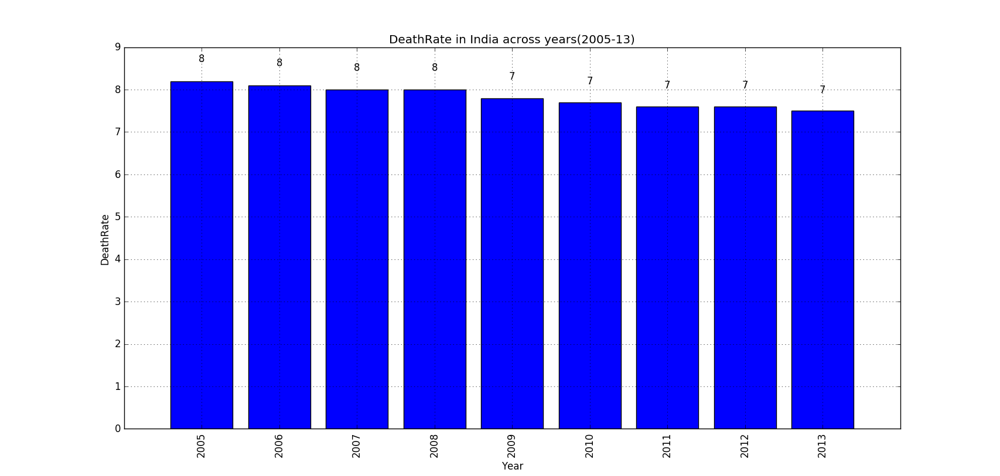
Death Rate Versus Shortfall of Doctors across years(2005-13)
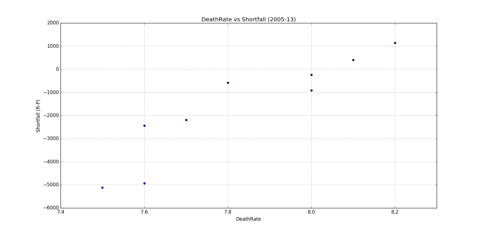
Number of Doctors in PHC's in India across years (2005-14)
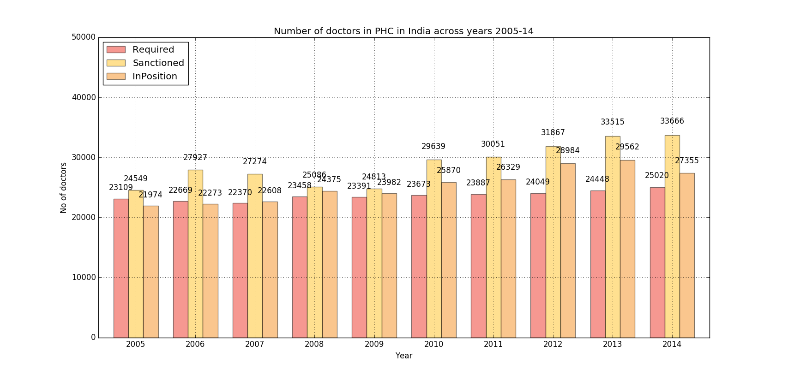
IMR in India across years(2004-12)
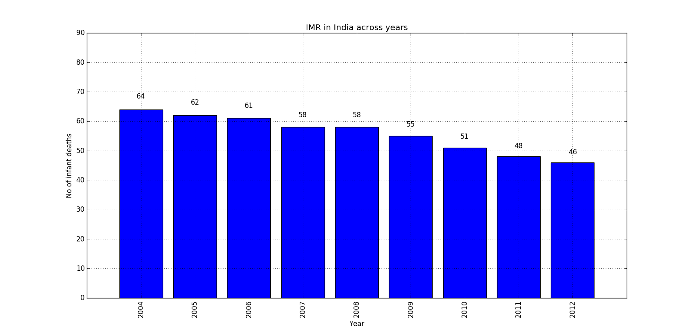
CHC facilities in India across years(2010-14)
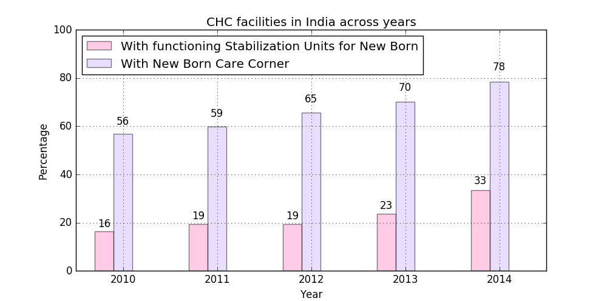
Number of Pediatricians in India across years(2005-14)
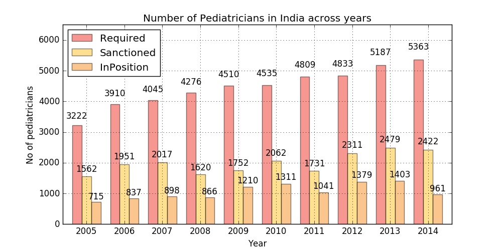
MMR in India across years(1997-2013)
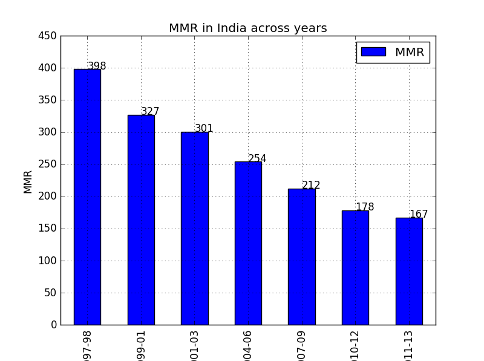
CHC facilities in India across years(2006-14)
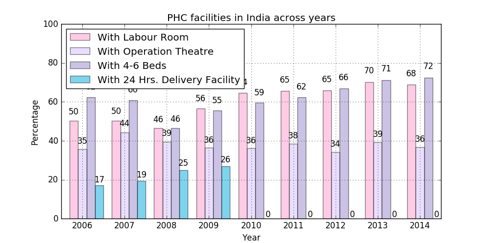
Obstetricians and Gynaecologists in India across years(2005-14)
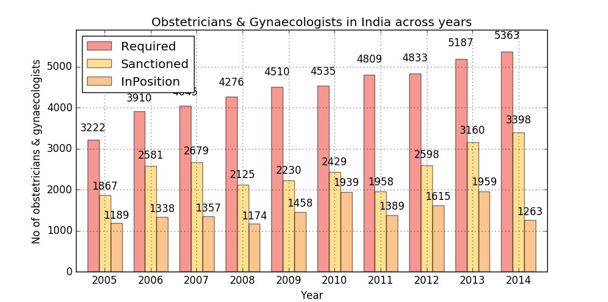
SubCenter facilities in India across years(2006-14)
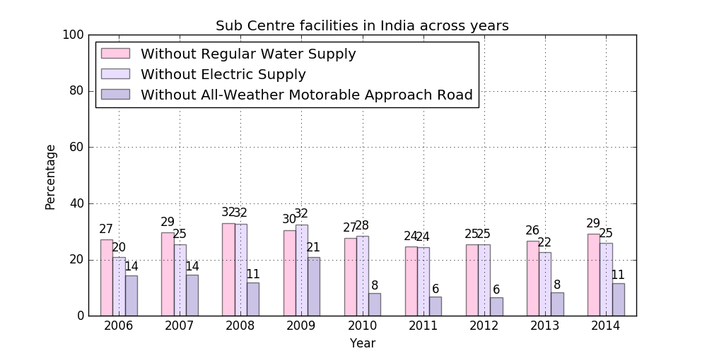
PHC facilities in India across years(2006-14)
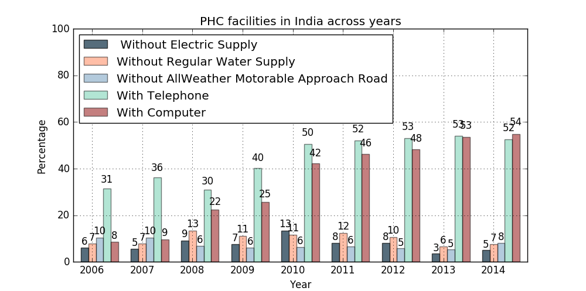
Other CHC facilities in India across years(2006-14)
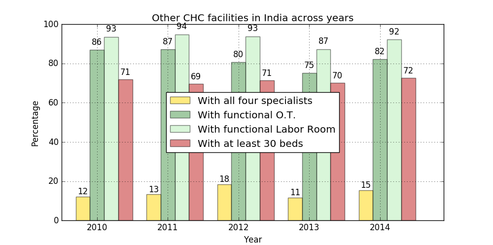
Required-Sanctioned-Positioned doctors in India across years(2005-14)
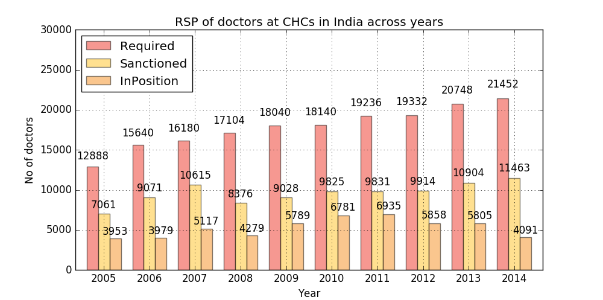